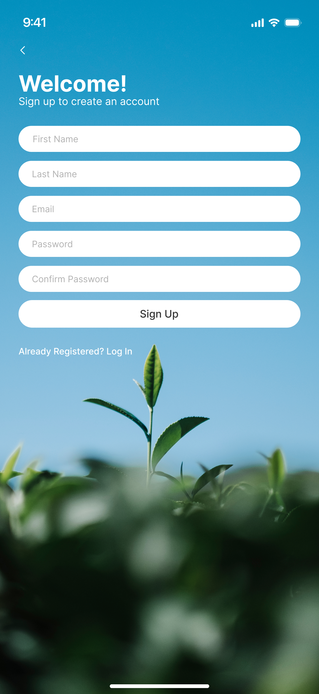
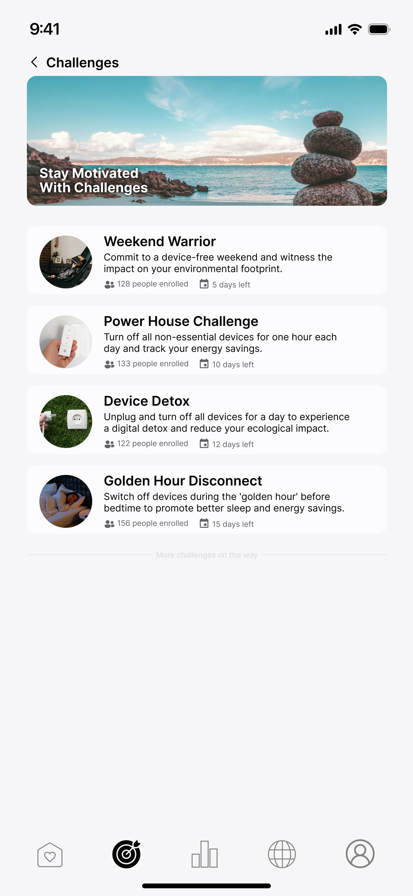
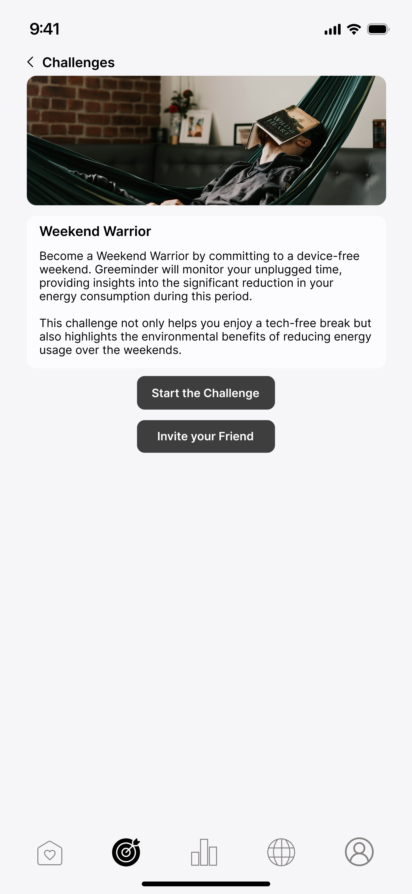
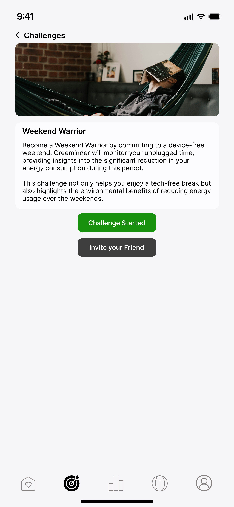
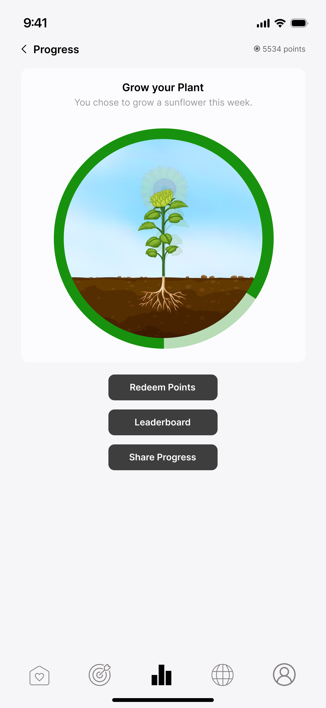
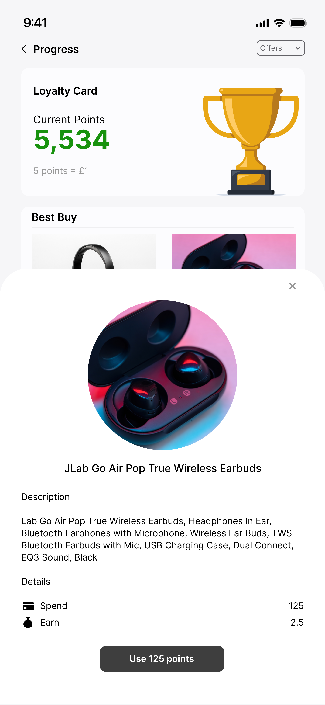
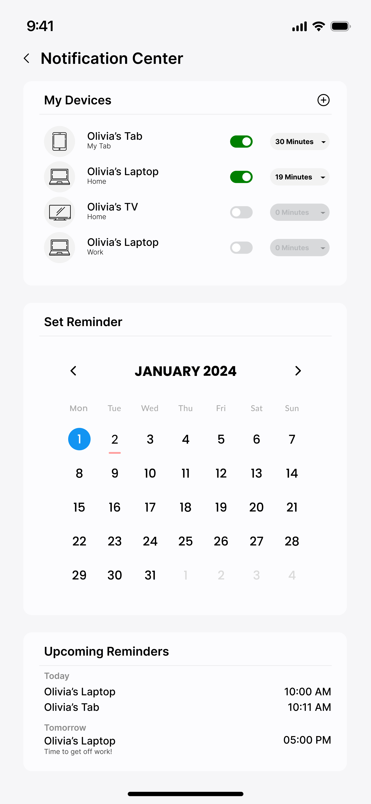

Timeline: 4 weeks
Role: Design Strategy, User Research & Design
Design Brief
Solution Overview
▸ Idle Device Alerts: Utilises Bluetooth Low Energy (BLE) signals to detect when users are moving away from their devices, sending reminders to power down.
▸ Educational Insights: Provides real-time information on the environmental impact of idle devices to foster responsibility.
▸ Data Security: Implements robust privacy measures with transparency in data usage and user control over data sharing.
▸ Community Engagement: A feature enabling users to share ideas and activities for promoting environmental awareness.
Design Process
Design Challenges
| Problem Statement | Solution |
|---|---|
| Users have different lifestyles, hence, they will have different priorities | The application provides different features that users can use to customize their experience when using the application to fit their lifestyle preferences |
| Users may be concerned with their location data being collected | The application provides the required security measures to protect users' data, and provide the users with option to share their data and reverse consent |
| Users may be interested in sharing experiences and ideas to promote environmental awareness | The application provides a community feature where users can share ideas and activities with the community |
Understanding the Users
The potential user group for this app are the general consumers, who use electronic devices regularly and have in interest in environmental sustainability, and users who own smart home devices such as Alexa, who are interested in optimising their energy usage for both, environmental and cost-saving reasons.
Evolution of the Idea


Low-Fidelity Prototype

High-Fidelity Prototype









